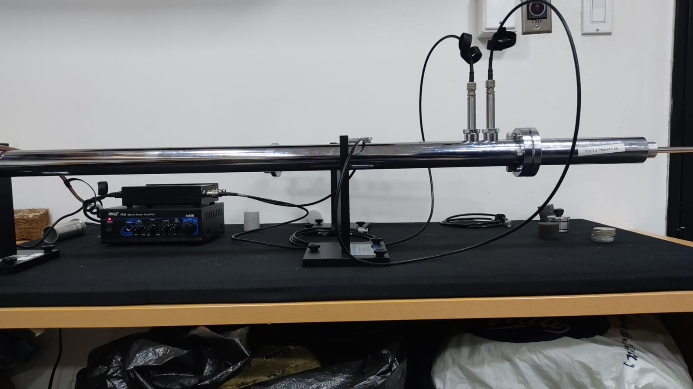
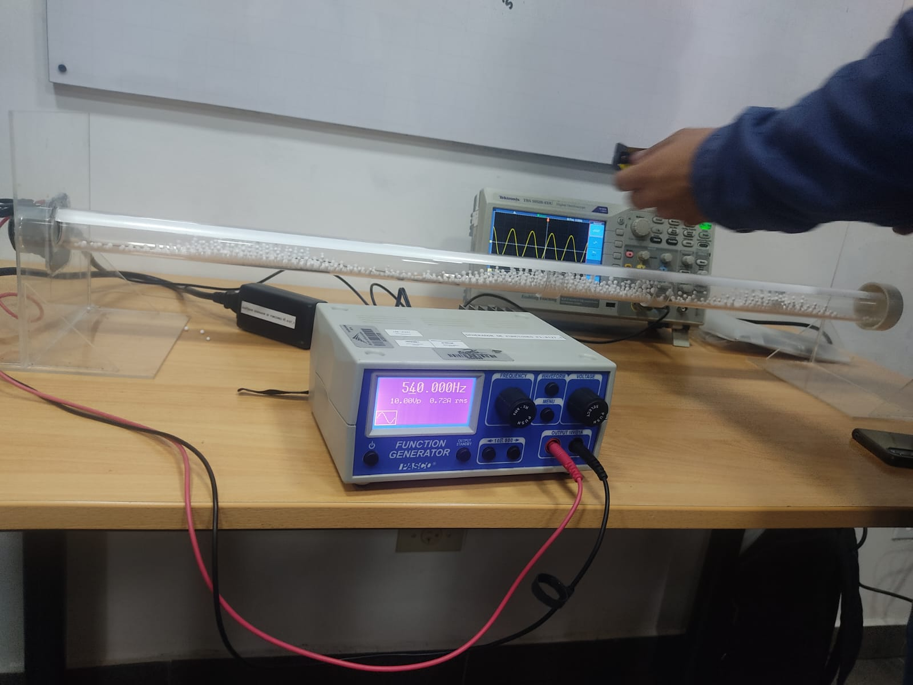
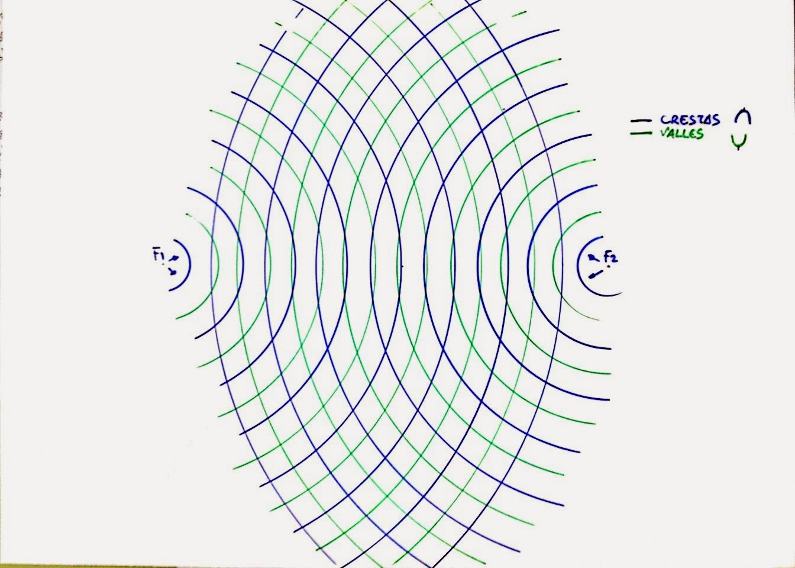
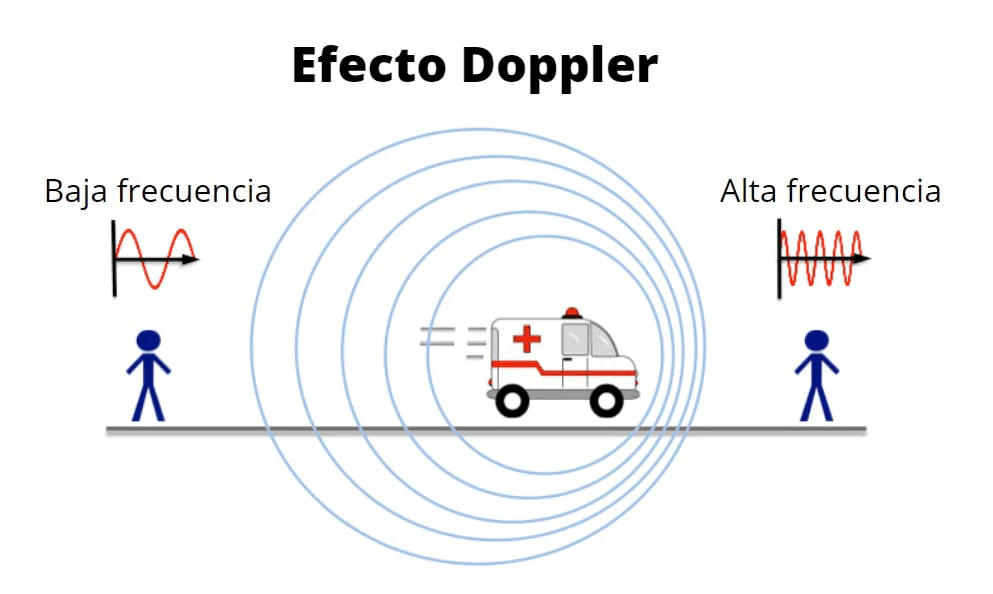

Un recorrido por la física que mueve el sonido, la luz y mucho más.
Una onda es una perturbación que se propaga en el espacio y transporta energía sin que haya transporte de materia. Las ondas pueden ser mecánicas (como el sonido) o electromagnéticas (como la luz).
Una onda es una perturbación que se propaga a través del espacio y transporta energía sin trasladar materia. Las ondas están en todos lados: el sonido que escuchas, la luz que ves y hasta las vibraciones en una cuerda.
Necesitan un medio para propagarse, como el sonido en el aire o las olas del mar.
No necesitan medio; pueden viajar por el vacío. Ej: luz, microondas, rayos X.
La perturbación va perpendicular a la dirección de propagación. Ej: luz.
La perturbación va en la misma dirección que la onda. Ej: sonido en el aire.
Es el número de ciclos que ocurren por segundo. Se mide en hertz (Hz).
Es la distancia entre dos crestas o valles consecutivos.
Es la altura máxima de la onda. Indica cuánta energía transporta.
Es la rapidez con que se propaga la onda. Se calcula con: v = f · λ
Las ondas sonoras permiten que escuchemos música. Instrumentos de cuerda, viento o percusión generan vibraciones que viajan por el aire y llegan a nuestros oídos.
Los ingenieros de sonido manipulan ondas para mejorar la calidad del audio en estudios, conciertos, cine o radio, controlando parámetros como frecuencia y amplitud.
En medicina, se usan ondas de alta frecuencia para crear imágenes del interior del cuerpo, sin necesidad de radiación. Se aplica también en limpieza de precisión.
El diseño de auditorios, teatros y estudios busca controlar la propagación de las ondas para lograr una buena acústica: absorción, reflexión, difracción y reverberación.
Las ondas electromagnéticas permiten enviar y recibir señales en la radio, televisión, Wi-Fi y celulares, a través del aire o cables.
A continuación te mostramos algunos experimentos clásicos para estudiar las propiedades y comportamientos de las ondas mecánicas y sonoras.
Este experimento permite visualizar los nodos y antinodos de una onda estacionaria. Se utiliza polvo dentro del tubo para observar los patrones de interferencia.
Se genera una onda sonora dentro de un tubo y se ajusta su longitud o frecuencia para observar los puntos de resonancia, donde la amplitud de la onda se maximiza.
Al superponer dos ondas del mismo tipo, se observa cómo interactúan: pueden reforzarse (interferencia constructiva) o anularse (interferencia destructiva).
Se percibe un cambio en la frecuencia del sonido cuando la fuente se mueve respecto al observador. Muy usado en radares, medicina y astronomía.
